Build the design team's presentations as native Figma Slides files with Kiro, on the official template, 00 Day & Night template. Kiro writes the story and the copy, then builds a file you drag into Figma: text linked to the template's styles, colours from its Slides theme, the linked Shiji logo, real gradients, auto layout text, speaker notes and transitions.
The kit is a ZIP with the agent, three skills, the template skeleton and examples. The .fig is the template's 40 layouts rebuilt by the kit: drag it onto the Figma file browser to see the look. The team's own template lives in Figma: 00 Day & Night template.
Quick start
1Download
Unzip the kit anywhere. Keep the hidden .kiro folder: it holds the agent and the skills.
2Open in Kiro
File → Open Folder, pick Presentation-Designer, then Trust.
3Describe the deck
Pick the presentation-designer agent in the chat and say what the deck is for, who is in the room and where the facts are.
What to ask
"Design Updates Q4 2026 for product leadership, 40 minutes. Here are the Jira epics and the adoption numbers."
"A component update on the new Panel for developers and QA. Figma file: …, prototype: …"
"Turn these research notes into a readout for the product team. Humour is welcome."
"Review this deck for tone and consistency." (with a Figma link, or a copy saved from Figma)
Kiro asks a few questions, proposes the story one line per slide and waits for your yes, writes the copy and speaker notes, builds the file, looks at every slide, runs its checks and tells you what is left to finish in Figma. Every deck lives in its own folder in decks/.
Open it in Figma
Drag the .fig file onto the Figma file browser (Drafts or a project page), or use Import there. Not onto an open file: Figma then answers "Drop .fig or .jam files into the file browser".
It opens as a Figma Slides file. Finish there what a file cannot carry: prototype embeds, GIFs, polls.
Need PowerPoint? In Figma: File → Export → PowerPoint. Or ask Kiro for a .pptx.
What you need
macOS with Python 3.9 or newer: if python3 is missing, macOS offers to install it the first time you type it in a terminal.
Google Chrome: Kiro uses it to measure text and draw previews.
The Shiji fonts (Day Sans Aeonik, Night Serif Reckless Neue) from the design lead, and Noto Sans from Google Fonts. Figma has them already: the fonts only make the local preview exact.
Check a computer with python3 setup/check_setup.py in the kit folder: it builds a short test deck to drag into Figma.
For maintainers
The kit is plain files. The official template leads: change it in Figma, save a local copy into template/. The look as numbers lives in .kiro/skills/presentation-brand/assets/tokens.json (it matches the template's text styles and theme colours), the layouts in .kiro/skills/figma-slides-builder/scripts/layouts.py; ask Kiro for kit maintenance and it follows .kiro/steering/kit-maintenance.md. Rebuild this website and the downloads with python3 setup/build_site.py.
There is no auto-update: download the new zip and replace everything except your decks/ folder.
What is this
A Kiro kit that turns notes, Jira tickets, research and Figma links into Figma Slides decks for the Shiji design team, in one consistent look, without anyone pushing pixels for hours.
What it is
An agent, presentation-designer, that runs the whole flow: brief, story, copy, build, checks, hand-over.
Three skills that stay aligned: the writer (the words), the brand (the look) and the builder (the Figma file).
The 40 layouts of the official template, from covers to audit collages, in its six rows.
Native Figma Slides files that belong to the template: its text styles, its theme colours, the linked logo and icons, its layer names, plus gradients, auto layout, videos, notes, transitions and one named grid row per section.
Checks before you see anything: copy, fit of every text block, structure of the file.
What it is not
Not a replacement for designing in Figma: it gets the deck to 90%, you finish the details.
Not a source of facts: every number, quote and date comes from what you give it. Gaps stay marked as [TBD].
Not a Figma plugin: it writes a file; Figma imports it.
Not live elements: polls, prototype embeds and GIFs are added in Figma (the slides say where).
How it works
The writer skill interviews you, outlines the story and writes deck.json: every slide's copy, kicker, highlight and speaker notes, with live moments placed for the deck type. The brand skill holds the look in one file of tokens that matches the official template: colours, gradients, type, the day, night and blue themes. The builder starts from the template file, draws each layout, links text to the template's styles, measures every text block in Chrome, previews every slide and checks the file before you open it.
When to use it
Quarterly design updates for stakeholders: outcomes first, numbers with sources.
Design and component updates: the detail builders need, screen by screen.
Research readouts: stories, quotes and findings, with room for humour.
Huddles, kickoffs and challenges: short decks with a clear ask.
Reviewing an existing deck for tone, consistency and words that do not fit.
The look: Day & Night
Shiji's rebrand is about Day and Night: hotels run 24/7. Night slides carry the big moments in Night Serif with one Energetic Green highlight; day slides carry the screenshots and the detail; Reviewpro Blue punctuates. The official template, 00 Day & Night template, defines it; everything below is drawn from presentation-brand/assets/tokens.json, which matches the template value for value and which every build reads.
Themes
NightOne idea, one highlightNight Serif for emotion, Day Sans for information.Questions?
DayOne idea, one highlightNight Serif for emotion, Day Sans for information.Questions?
BlueOne idea, one highlightNight Serif for emotion, Day Sans for information.Questions?
Backgrounds
aurora cover and closinghorizon night opener, scenariosdeep dividers, hero quotesnight night contentblue punctuation
Rules
Night by default for openers, dividers, statements, quotes and numbers; day for screenshots and detail; blue for one or two punctuation slides.
One highlight per slide, marked ==like this==: Energetic Green on night, Reviewpro Blue on day. Never green text on a light background.
Three typefaces, three jobs: Night Serif for emotion, Day Sans for information, Noto Sans for labels. Every text is linked to a "Shiji /" text style of the template.
No black: text on day slides is Midnight.
Gradients from the tokens, built as real Figma gradients. Four legacy layouts keep the earlier violet glows on purpose: about one per deck.
CTA = pill: fully rounded, green on night, Reviewpro Blue on day.
Screenshots sit on a stage at their own ratio, with 16 px corners, a hairline frame and a soft shadow.
Space: 128 px side margins, content between 104 and 944 px, the logo bottom right.
Kicker, title, subtitle: the kicker names the topic in 1 to 4 words, the title says the point.
One idea per slide: two highlights or more than four bullets means two slides.
Colours
Every file carries these as colour variables: the template's Slides theme, Shiji / Presentation theme (role names such as Background/Night, Accent/Mint, Surface/Ice), and the full palette, Shiji Day & Night, so designers pick them from Figma's colour picker.
Midnight#172554Blue 0. Night slide background; the text colour on day slides (never black)
Twilight#1E3A8ABlue 1 (Data + AI). Circles, secondary dark surfaces
Reviewpro Blue#0030FFBlue 2. Highlight, link and button colour on day slides; blue slides
Blue 3#3B82F6Glows and charts
Meridian#60A5FABlue 4. Glows, secondary numbers on night slides
Blue 5#D5ECFFSecondary text on night slides; borders on day slides; the walkthrough background
Daylight Blue#E8F5FFBlue 6. Panels and chips on day slides
Daylight Blue 60#F1F9FFThe stage behind screenshots on day slides
Daylight Blue 30#F8FCFFQuiet day background
Energetic Green#0AFFABThe one highlight per slide: a word, a number, a dot, a button. Never green text on a light background
White#FFFFFFDay background; titles on night slides
Moonlight#EEF1FFBody text on night slides
Alert (on light)#DC2626Errors and risks on day slides
Alert (on dark)#F87171Errors and risks on night slides
Sunrise Red#8D3791Daylight PMS product colour
Sunset Yellow#FFB851Iceportal product colour
Sunset Orange#FF8056Horizon product colour
Sunset Purple#7443A7Infrasys product colour
Brand Navy#172256Legacy layouts only: the gradient cover and the brand-circle question
Link Blue#2463EBLegacy layouts only: the oversized-number divider
Logo Blue#1F3A8AThe Shiji logo and the round icon button on day slides
Light Blue#92C5FDWireframe lines on night; the variants stage on day (at 20%)
Ink#111111The design-team slogan only; everything else on day slides is Midnight
Type scale
Samples at half size. Sizes are for a 1920 × 1080 slide.
display
Night Serif Reckless Neue Heavy 112 px · Cover and closing titles Figma style: Shiji / Display / Serif display 112
Design Updates
display-xl
Night Serif Reckless Neue Heavy 112.5 px · The serif line of the legacy titles (gradient cover, brand circle) Figma style: Shiji / Display / Serif display 112.5
Q2 Achievements
display-s
Night Serif Reckless Neue Heavy 88 px · Divider titles, questions, agenda title Figma style: Shiji / Display / Serif display 88
Agenda
header
Day Sans Aeonik Black 112.5 px · The Day Sans line of the legacy titles (gradient cover, brand circle) Figma style: Legacy / Shiji Day Sans Aeonik / Header 112.5
2026 Roadmap
number
Night Serif Reckless Neue Heavy 240 px · Section numbers Figma style: Shiji / Display / Variants / Serif display 240
01
metric
Day Sans Aeonik Regular 800 px · The faded number behind the oversized-number divider Figma style: Shiji / Display / Variants / Metric 800
01
stat
Night Serif Reckless Neue Heavy 120 px · Big numbers Figma style: Shiji / Display / Serif display 120
~60%
stat-s
Night Serif Reckless Neue Heavy 88 px · Big numbers in a 2 x 2 grid
12,480
statement
Night Serif Reckless Neue Regular 80 px · One-sentence slides Figma style: Shiji / Display / Serif quote 80
Night Serif Reckless Neue Regular 36 px · Quotes in cards and grids Figma style: Shiji / Quotes / Quote 36
Everything is where I expect it.
slogan
Night Serif Reckless Neue Regular 64 px · The design-team slogan Figma style: Legacy / Shiji Night Serif Reckless Neue / Quote 64
Design with proof
title-l
Day Sans Aeonik Bold 80 px · The title of the oversized-number divider Figma style: Legacy / Shiji Day Sans Aeonik / H2 80
Research Process
title
Day Sans Aeonik Bold 64 px · Slide titles Figma style: Shiji / Headings / Slide title
Search that finds it
title-s
Day Sans Aeonik Bold 48 px · Titles on busy slides
What we learned
heading
Day Sans Aeonik Bold 32 px · Column and card headings Figma style: Shiji / Headings / Subheading 32
Layout improvements
subtitle
Day Sans Aeonik Regular 32 px · The line under a title Figma style: Shiji / Body / Lead 32 / Variants / LH 45 PS 14 LS 0 Track 0
UX & UI Design
lead
Day Sans Aeonik Regular 32 px · First sentence of a content slide Figma style: Shiji / Body / Lead 32
Find any setting without knowing where it lives.
body
Day Sans Aeonik Regular 28 px · Paragraphs and bullets Figma style: Shiji / Body / Body 28
Live filtering across all sections
small
Day Sans Aeonik Regular 22 px · Card text, labels under numbers Figma style: Shiji / Captions / Caption 22
One scale replaces hardcoded values.
kicker
Noto Sans Bold 22 px · The small label above a title Figma style: Shiji / Labels / Kicker
Settings
label
Noto Sans Medium 18 px · Chips, names, dates Figma style: Shiji / Labels / Metadata 18
Front office
button
Day Sans Aeonik Bold 22 px · Text in pill buttons (CTA = pill) Figma style: Shiji / Labels / Variants / Caption 22 Bold
Questions?
caption
Noto Sans Regular 18 px · Captions under pictures Figma style: Shiji / Captions / Regular 18 / 26
Every review in one list
caption-l
Noto Sans Regular 24 px · Captions under device mockups and on the variants slide Figma style: Shiji / Captions / Regular 24 / 134%
New update allows totals beside badges.
footnote
Day Sans Aeonik Regular 18 px · Sources and notes at the bottom Figma style: Shiji / Labels / Caption 18 Regular
Source: Rollout summary
Layouts
The 40 layouts of the official template, in its rows. Every slide can switch theme with "theme": "day" | "night" | "blue"; text takes **bold**, ==highlight== and [links](https://…). The pictures come from the template's layouts rebuilt by the kit itself (in this public edition, the team's product screenshots are placeholders).
01 · Covers & agenda
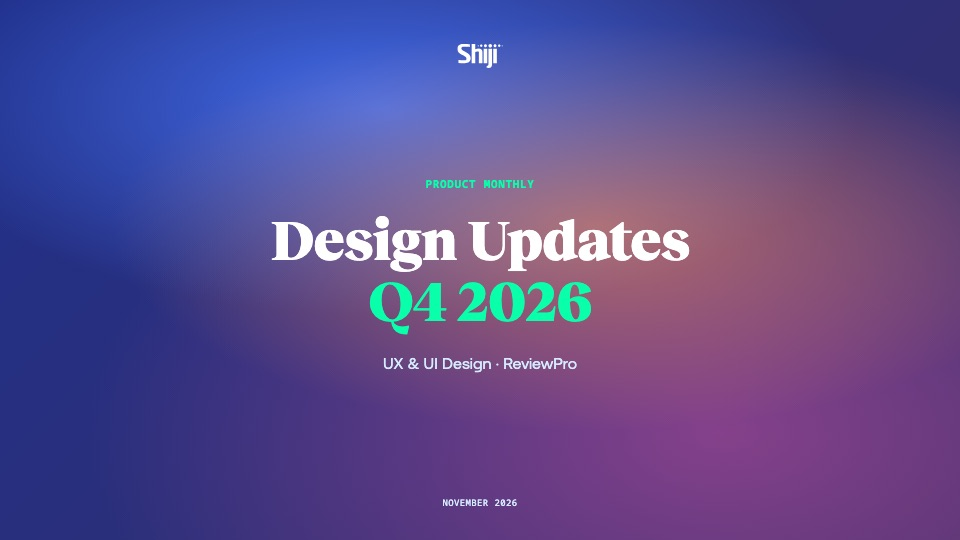
covernight Cover · Aurora
Opening slide on the aurora: logo top centre, centred Night Serif title with one green highlight, subtitle and date.
kicker, title (==x== marks the green line), subtitle, date
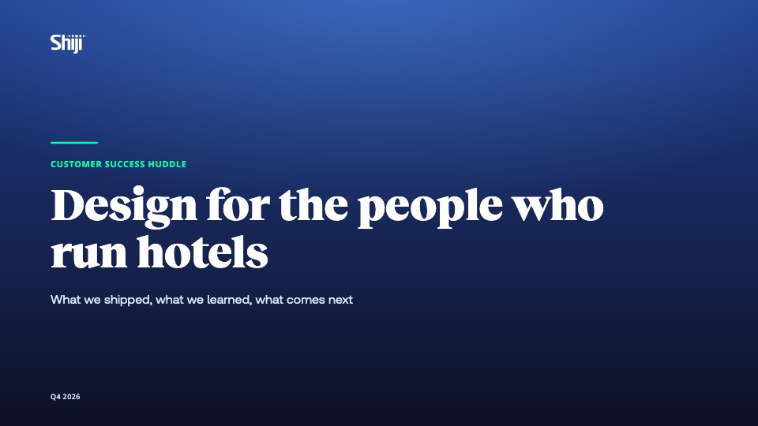
cover-navynight Cover · Horizon
Left-aligned opening slide on the night horizon (day light at the top fading into night), logo top left.
kicker, title, subtitle, date
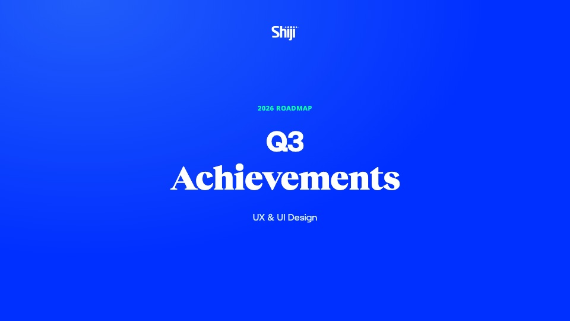
cover-centerblue Cover · Split typography
Centred opening slide on Reviewpro Blue: a Day Sans line over a Night Serif line (2026 Roadmap / Q2 Achievements).
kicker, title (line 1 in Day Sans, line 2 in Night Serif), subtitle, date
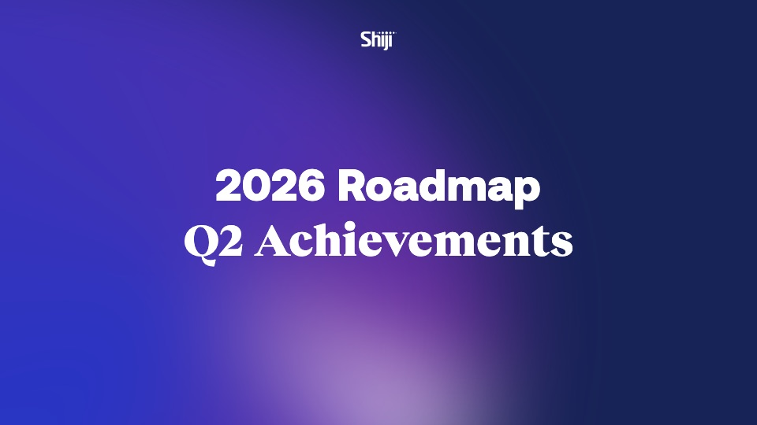
cover-gradientnight Cover · Legacy gradient
Legacy look: centred two-line title on Brand Navy with the violet glow of the previous template rising from the bottom left. Use on purpose, about one per deck.
kicker, title (line 1 in Day Sans Black, line 2 in Night Serif), subtitle, date
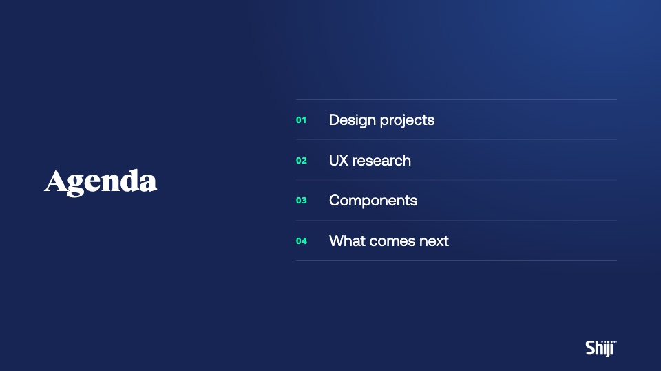
indexnight Agenda · Four topics
Agenda: Night Serif title on the left, numbered topics on the right with hairlines between them.
title (default "Agenda"), kicker, items[] (up to 8)
02 · Dividers & key messages
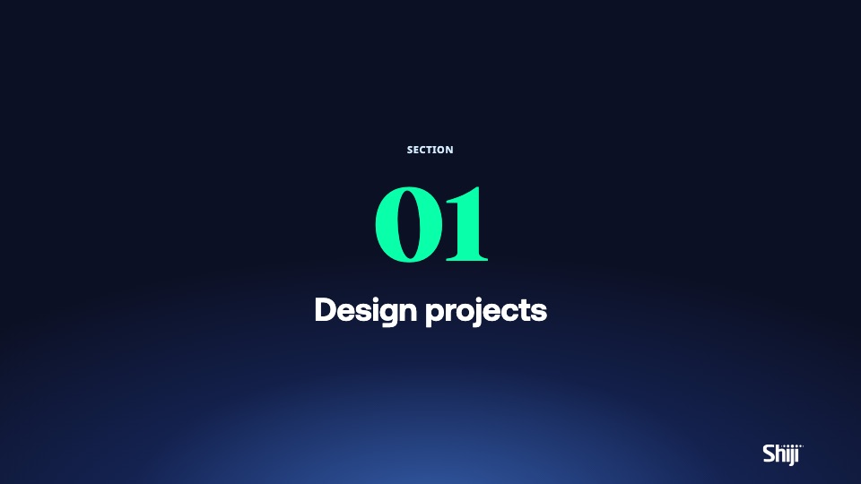
sectionnight Divider · Dark numbered
Section divider on deep night: Energetic Green section number in Night Serif, title under it. Starts a new row of the slide grid.
number ("01"), title, kicker, background (deep|night|horizon|aurora|blue)
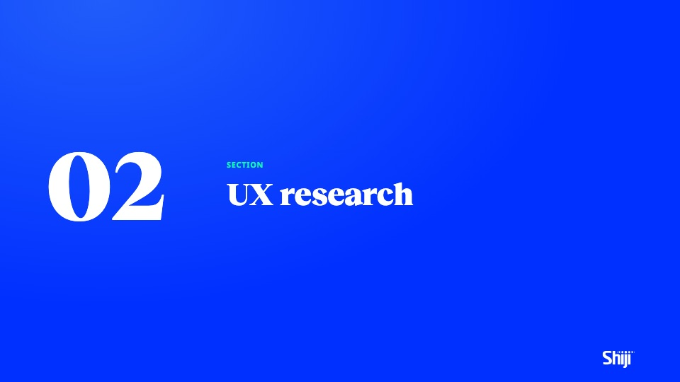
section-flatblue Divider · Blue numbered
Section divider on Reviewpro Blue: big white number on the left, title beside it. Starts a new row of the slide grid.
number, title, kicker
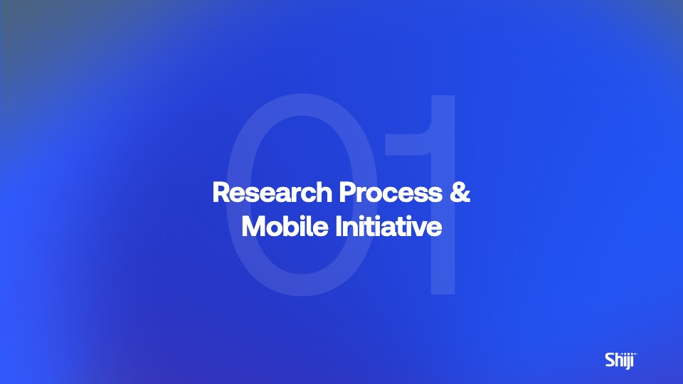
section-numbernight Divider · Oversized number
Legacy look: a giant faded number behind a Day Sans title on Link Blue with a violet edge. Starts a new row of the slide grid. Use on purpose, about one per deck.
number ("01"), title
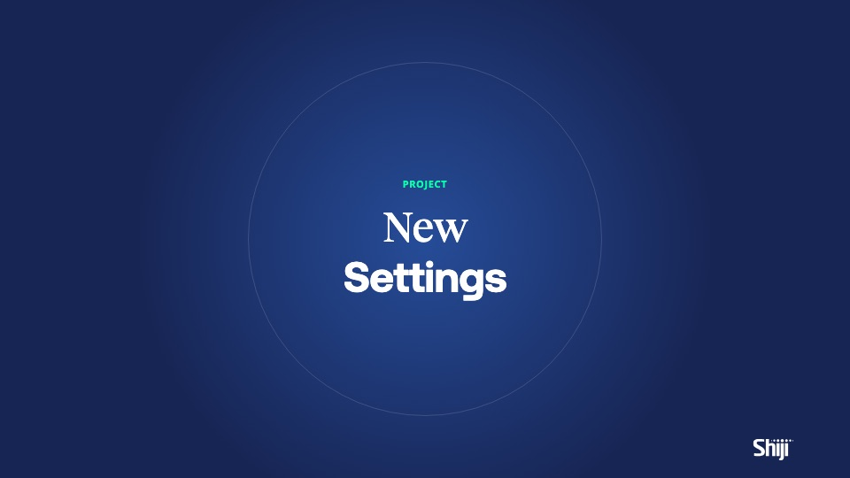
topicnight Project opener · Mixed typography
Sub-topic divider: two-line title in a soft blue glow inside a thin ring (New / Settings).
title (line 1 Night Serif, line 2 Day Sans), kicker
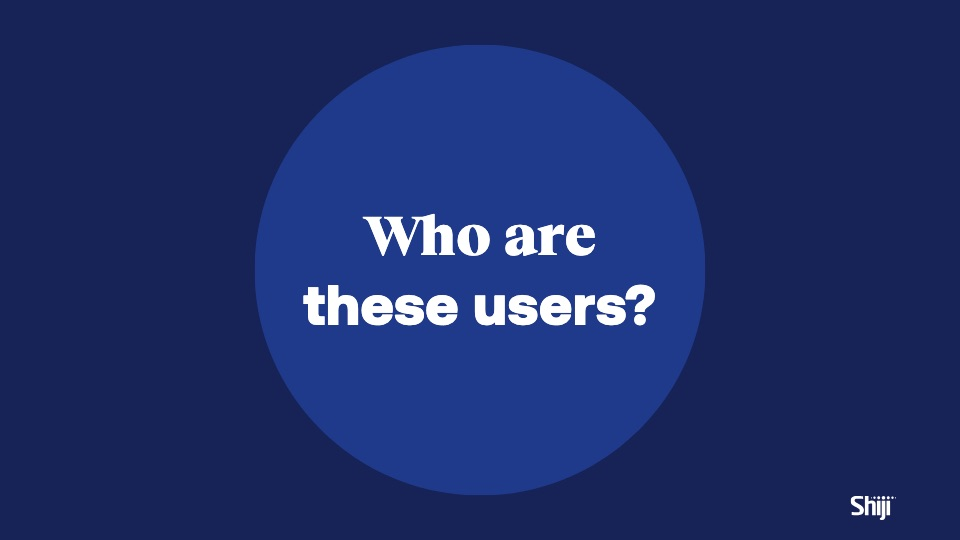
question-circlenight Question · Brand circle
Legacy look: a question in two typefaces inside the Shiji brand circle on Brand Navy (Who are / these users?).
title (line 1 Night Serif, line 2 Day Sans Black), kicker
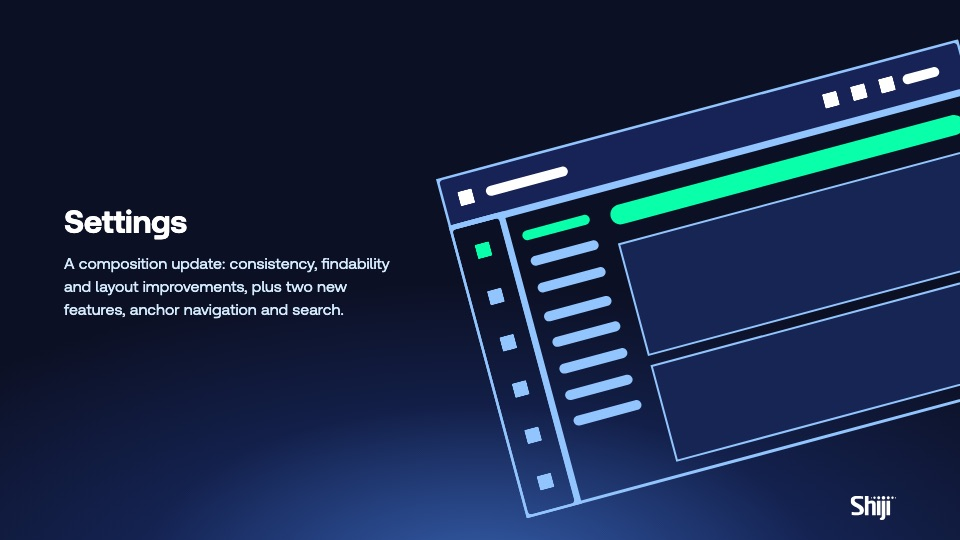
compositionnight Component · Composition overview
A component or page in one line, next to a tilted product wireframe on deep night (a composition update).
kicker, title, lead, bullets[]
03 · Product & comparisons
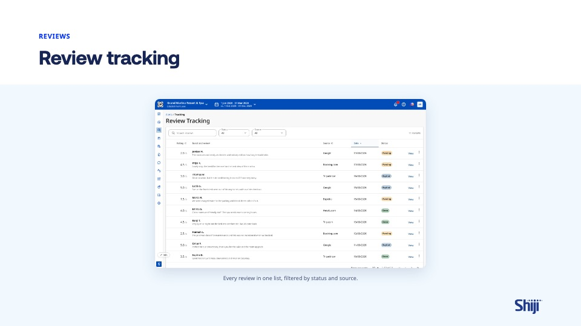
imageday Product · Large screenshot
Title on top, one big screenshot or diagram on the stage below (flows, journeys).
A phone on a soft circle at the right showing the screenshot; title and text on the left.
kicker, title, title_light, subtitle, body, bullets[], image (phone screen, about 9 x 19.5)
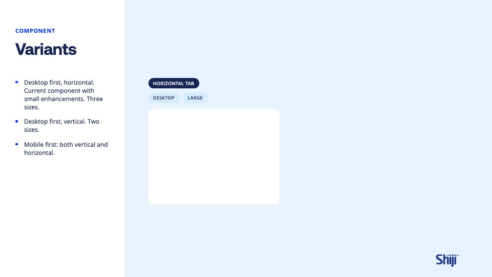
variantsday Product · Variants & showcase
A component's variants: a short list on the left, each variant on the light-blue stage with its name, its tags and a demo slot (a screenshot, or an empty slot to paste the component into).
The workhorse: text column centred in the white panel on the left, the screenshot on a soft stage on the right. With embed_url it becomes a live prototype slide.
A feature argued with evidence on Daylight Blue 60: the case on the left (a line in the highlight colour, the facts, a closing line), the picture and its sources on the right.
kicker, title, subtitle, lead, bullets[], closing, image, source (one or a list of {text,url})
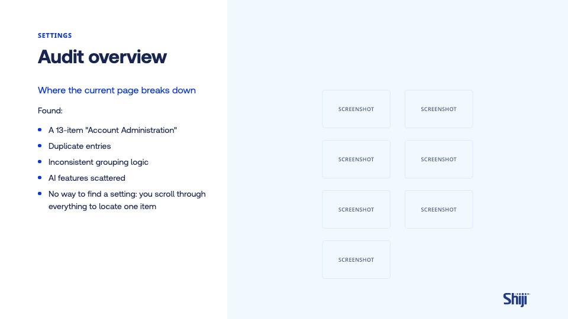
collageday Component · Audit collage
An audit in pictures: the findings on the left, a two-column collage of screenshot crops on the stage.
Legacy look: a scenario or brief in white on the violet field of the previous template, fading to white at the bottom right. Use on purpose, about one per deck.
kicker, title, lead, body, bullets[]
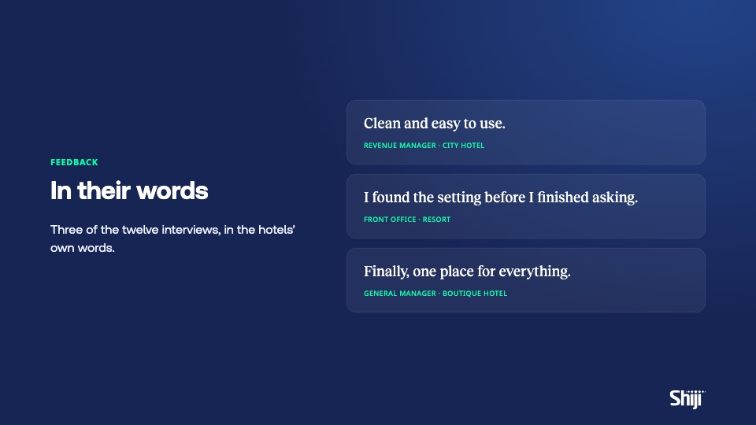
quote-cardsnight Quotes · Three testimonials
Text on the left, two or three short user quotes as glass cards on the right.
A light panel on the left with the why; up to four icon items on the right (key projects, principles). Icons: integrations, space, settings, question, flag.
kicker, title, body, highlight, heading, items[{icon,title,text}] (up to 4)
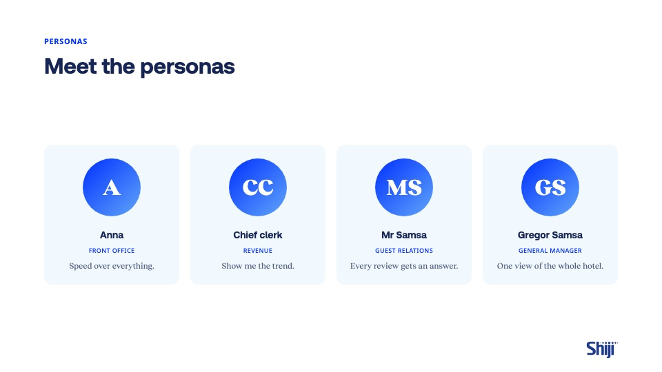
peopleday People · Four personas
A row of people or personas: round photo (or initials), name, role and a one-line quote.
kicker, title, people[{image,name,role,quote}] (up to 5), footer
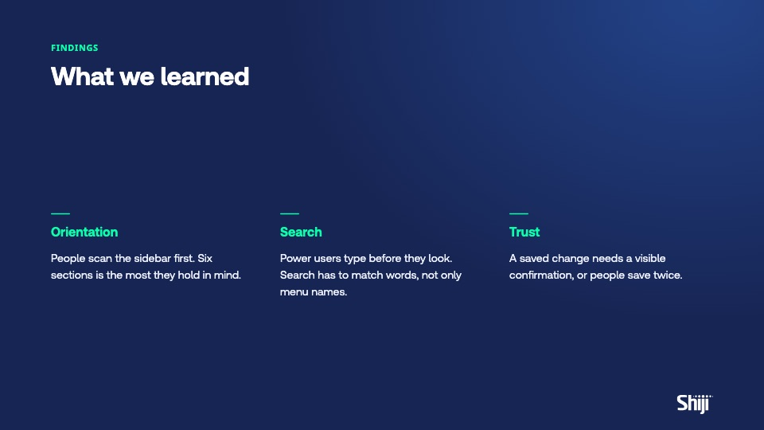
columnsnight Findings · Three columns
Two or three columns, each with a highlighted heading (the two-column slide of the original brand deck).
kicker, title, subtitle, columns[{title, text | bullets[]}] (2-3)
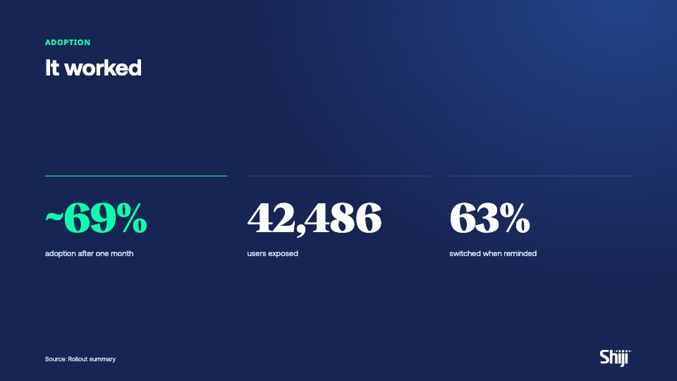
statsnight Metrics · Three values
Proof in numbers: Night Serif figures with a hairline above each, the first one in Energetic Green.
The writer skill decides the words before anything is drawn: the story, the headlines, the speaker notes, and the live moments that keep the room awake.
Deck types
Quarterly
For stakeholders: outcomes first, one number per claim with its source, a few strong live moments.
Design or component update
For builders: name, aspect, claim, at most four lines; current versus new, states, specs.
Research readout
For the product team: stories, quotes and findings, a live moment every three to five slides.
Live moments
Moment
What
Layouts
Comedic relief
A meme or a funny picture that moves the argument forward
meme, split, picture
The quoter
Real words of real people, attributed by role and company
quotes, quote, quote-cards
A question to the room
Show of hands, a poll, a check-in
question, question-circle, circle-list
The reveal
The answer, the twist, the punchline
statement, quote
A breather
A pause after a dense run
topic, statement
A principle
A line to remember
slogan, question in serif
Ground rules
Nothing invented. Missing facts become [TBD — Requires Input], and the copy check refuses to pass them.
One slide, one point. If a headline needs "and", it is two slides.
Speaker notes on every content slide, written the way the presenter will say them.
The copy check runs before every build: word limits per layout, placeholders, sources for numbers, AI vocabulary, one highlight per slide, pacing.
Versions
4 versions so far. The kit is at version 3.1, updated on 19 Nov 2026. Download it again from Install when a new version comes out, and move your decks/ folder into the new kit.
Maintainer
Laura Casas (Design) is the only maintainer of the kit right now. Changes to the kit, its copy of the template and this website go through her.
Requests for slides
Need a slide or a layout the kit does not have yet? Write to Laura Casas on Teams: say what the slide is for, and send an example if you have one. She takes every request into account for the next versions.
What changed
3.1 19 Nov 2026 Current
Fixes "Internal error during import" in Figma for decks built with the 3.0 download from the website. Every file the kit writes now carries a preview image, like the files Figma saves.
Built on the official template as saved from Figma on 19 Nov 2026.
Finds the template's theme colours even when Figma renames the theme.
When Figma refuses a deck, Kiro knows the steps: get the latest kit, refresh the template from Figma, then tell the maintainer.
40 layouts, 12 of them new: the legacy gradient cover, the oversized-number divider, the brand-circle question, the composition overview, the current-state walkthrough with video, the laptop comparison, variants, anatomy, shortcuts and evidence, the audit collage, the gradient brief and the design-team slogan.
Text uses the template's "Shiji /" text styles, colours come from its Slides theme, labels are Noto Sans and layers carry the template's names.
A public edition of the kit for the website, without the team's own screenshots, recordings and internal links.
2.0 18 Nov 2026
The Shiji Day & Night look: night slides with Night Serif titles and one Energetic Green highlight, day slides for screenshots, the aurora on the cover.
A new skill, presentation-brand: the Brand Kit colours, the aurora and horizon gradients, the type, the day, night and blue themes, the rules and a visual check, all from one file of tokens.
28 layouts, and a Day & Night showcase file with every layout once, to open in Figma.
Decks are .fig files, which Figma's file browser takes by drag and drop.
The kit's website.
1.0 17 Nov 2026
First version: Kiro builds the design team's presentations as native Figma Slides files, on the Product Presentation Template.
The presentation-designer agent runs the whole flow (brief, story, copy, build, visual check, hand-over) and reviews decks.
The presentation-writer skill: deck types (quarterly, design update, research readout), the team's voice, slide copy rules, live moments and a copy check.
The figma-slides-builder skill: 27 layouts from the template and the team's decks, preview and fit report, file check, PowerPoint export.
A library of the 20 template slides and four of the team's decks (190 slides).